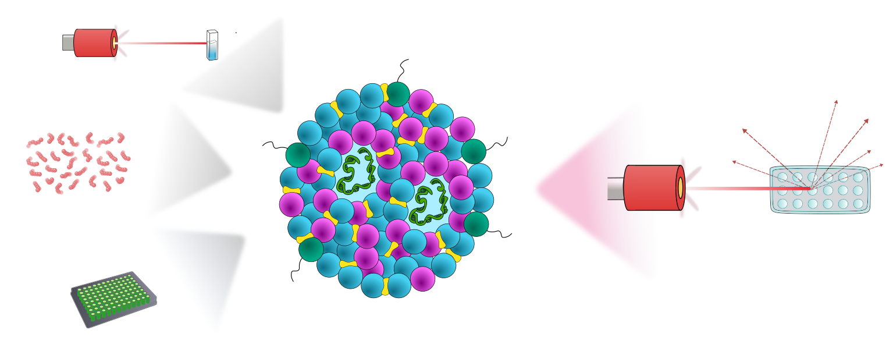
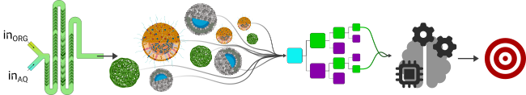

Publications
See the latest works from the nanoHTFS lab
2025
Comparison and validation of a high-throughput lipid nanoparticle production and characterization workflow
Simone Misto, Teresa Ferrillo, Sandor Balog, Fabiana Quaglia, Thomas L. Moore*
Submitted
Lipid nanoparticle-borne, RNA-based therapeutics have emerged as transformative tools in nanomedicine. However, to optimize lipid nanoparticle (LNP) formulations against different pathologies, it will be necessary to change LNP payload, lipid composition, and production parameters. High-throughput formulation screening provides a way to rapidly develop and assess new LNP formulations, however this requires the capacity for high-throughput LNP physico-chemical characterization methods. When considering a shift towards automated/semi-automated high-throughput methods, it is pertinent to evaluate whether such characterization is comparable to so-called “tried and true” methods, especially in the context of scaling hit formulations from the screening phase to production. Here, we show that combining a semi-automated microfluidic system with a high-throughput characterization instrument enables the rapid production and characterization of LNP. Compared to conventional methods, the high-throughput plate reader DLS provided comparable hydrodynamic diameter data and faster analysis, albeit with lower sensitivity for RNA quantification. Additionally, we conducted an independent analysis of raw autocorrelation function data from dynamic light scattering measurements to mitigate functional differences between the high-throughput and single sample instruments. Fluorescence-based assays, also capable for high-throughput workflows, were demonstrated to be more sensitive for RNA quantification. These results illustrate that high-throughput systems can streamline LNP development, and be integrated into a translational workflow, i.e. screening to identify hit formulations, transition of hit formulations to scalable production methods, and validation of screening characterization results. This integrated workflow represents an important step for RNA therapeutic development pipelines, where increasing characterization capacity can accelerate nanomedicine development.
Unleashing the power of machine learning in nanomedicine formulation development
Thomas L. Moore,* Cristiano Pesce, Antonietta Greco, Claudia Pisante, Greta Avancini, Valentina Di Francesco, Yosi Shamay, Paolo Decuzzi
Advanced Functional Materials, In Press
Artificial intelligence (AI) is being integrated into nearly every aspect of modern life, and machine learning (ML)–a subfield of AI–has the potential to accelerate the development of nanomedicines. Here, a machine learning workflow is presented to optimize the microfluidic-based formulation of nanomedicines. A database of ≈200 unique nanomedicine formulations with over 550 total measurements is curated by producing liposomes, lipid nanoparticles, and poly(lactic-co-glycolic acid) nanoparticles, either empty or loaded with the model therapeutic agent, curcumin. Nanoparticle production parameters are systematically varied, and the resulting particles are characterized for their diameter, polydispersity index, and encapsulation efficiency. These data are used to train and validate 13 different ML models using open-source libraries, with the task of returning the most accurate prediction of nanomedicine attributes. The most accurate models, based on random forest regression, are implemented to yield particles with user-specified attributes. Finally, the proposed ML workflow, MicrofluidicML, is compared against generative large language models–OpenAI ChatGPT, Google's Gemini, and DeepSeek. MicrofluidicML provides a workflow where the researcher has complete governance and control of the input data with a relatively low computational overhead, and represents a step toward implementing a computationally lightweight ML framework to accelerate nanomedicine development.